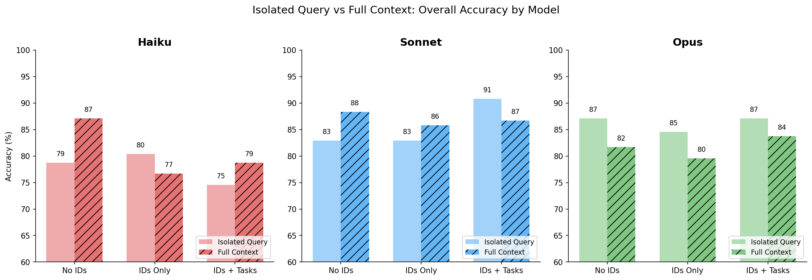

Visualizations

Full Context Delta

Isolated Vs Full Comparison

Complete Comparison
configs/experiment/icl_full_context.yaml
Script: experiments/run_icl_full_context.py
Wandb: truthification project
Does providing the observer with ALL statements (full context) enable better reliability inference through consistency pattern detection?
With full context, observers can:
1. See that Agent_A contradicts Agent_B and Agent_C on color/shape
2. Notice Agent_A is consistent with others on size/value
3. Infer Agent_A is unreliable on observer-relevant properties
4. Discount Agent_A's claims about color/shape
full_context_no_ids: All statements, no agent attributionfull_context_ids: All statements with agent IDsfull_context_ids_tasks: All statements with IDs and task descriptions| Model | No IDs | IDs Only | IDs+Tasks |
|-------|--------|----------|-----------|
| Haiku | +8.3pp | -3.8pp | +4.2pp |
| Sonnet | +5.4pp | +2.9pp | -4.2pp |
| Opus | -5.4pp | -5.0pp | -3.3pp |
The results suggest a complexity-capability tradeoff:
This has implications for prompt design: more context isn't always better, and the optimal amount may vary by model size.
{kind=link}